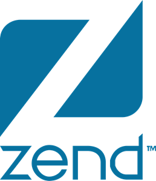

Working on Azure Data Explorer (Kusto) - exabytes scale cloud native analytics database.
Being a part of the Engine team, I'm working on optimizing query processing and data storage.
02/2017 - 07-2019
Data Engineering Lead, Research & Data Platform
HERE Technologies
Responsible for building data processing and ML infrastructure.
Designed and implemented ETL infrastructure that allows BI analysts adding new reports easily.
Created ML infrastructure that help researchers productionize their models.
Implemented Metadata and Data Lineage tracking solution, automated Data privacy processes.
Created Big Data infrastructure for events collection and processing.
Developed automatic pipeline for maps routing engine.
07/2015 - 05-2017
Tech Lead, Data
Appsflyer
Appsflyer is a market leader in mobile ad attribution and analytics. Here, I worked
on many projects around building and improving cost-effective data infrastructure,
including the following, among others:
Found proper technologies for evolving data infrastructure to meet new business requirements.
Built real-time data pipelines that process millions of events in a second.
Implemented batch processes for crunching terabytes of data, and building insightful reports from it.
09/2013 - 07-2015
Staff Engineer, Analytics
Ruckus Wireless
I worked on building BI platform that helps Ruckus Wi-Fi customers operate in a most effective way.
My responsibilities included:
Extended Pentaho analytics platform for building custom Ruckus BI solution.
Developed anlytics reports that help operators better understand effectiveness of Wi-Fi network deployment.
Deployed and optimized HP Vertica database.
Designed and developed prototype for moving from on-premise to cloud.
12/2009 - 09-2013
Software Architect
Colabo
As the first R&D employee I am responsible for the full life-cycle development of
the next-generation brand monitoring platform and cloud service from initial requirement
gathering to design, coding, testing, documentation and implementation. List of my achievements:
Designed and developed MVP.
Built an initial R&D infrastructure: Website, development, CI/CD, etc.
Adapted existing solution for several pivots the company has made.
Designed and implemented cloud service.

01/2007 - 12-2009
Software Architect, Development Tools
Zend Technologies
In this position, I led technically Zend Studio and open source Eclipse PDT projects.
Designed and developed PHP static code analyzer, one of the main features of Zend Studio.
Implemented major PHP release support in Zend Studio and Eclipse PDT.
Led re-design of Eclipse PDT core framework, basing the new one on PHP type inference engine, which made possible implementing more advanced IDE features, like: intelligent code assist, intelligent navigation, PHP static code analysis, re-factoring, etc.
Actively participated and contributed to open source projects under Eclipse.org (PDT, DLTK).
05/2005 - 02-2007
Senior Java Progammer, Development Tools
Zend Technologies
During that time I worked on commercial and open source IDE for PHP language.
Participated in establishing and developing Eclipse PDT project under Eclipse.org.
Implemented features in the new Eclipse-based Zend Studio, most noticeable are: PHP debugger and PHP profiler.
Fully responsible for design and development of Zend Guard application based on Eclipse RCP.
08/2002 - 05-2005
Packaging Enginner & Build Master
Zend Technologies
This was my first job after finishing my bachelors degree, which I combined with
the military service at IDF. During that time I worked on the following:
Designed and developed a distributed packaging system for Zend products that allowed to replace all manual procedures that existed before with a one-click package release.
Designed and developed a platform for automated testing of Zend products that allowed to speed up the release cycle by 300%.
Developed installation scripts for Zend products for Unix-like systems.
Solved various build and integration issues for Zend components and 3rd party libraries in Unix-like systems.
Projects
05/2017 - Present
Founder
ViyaDB
In-memory columnar analytical data store for unordered data, that enables customer facing
ad-hoc analytical queries. I’m founder and a lead developer of this open source project.
05/2013 - Present
Founder
TL;DR-ify
Web service that helps create a short link to any text on the Internet. I’m founder and a
lead developer of this open source project.
06/2014 - 06/2016
Founder
Dependency Watcher
CI service that manages dependencies of software components in your organization.